Use Ceremonial Actions to Prepare Yourself for Change annahavron.com
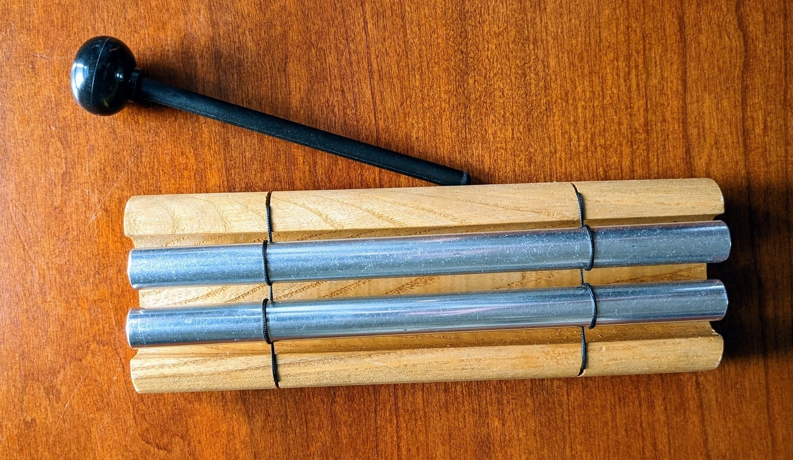
Tap into the power of ceremonial actions for making life changes.
The single most helpful phrase for this parent of young adult children: “Wow, that’s (exciting / unnerving / scary / fantastic!) What do you think you’re going to do?”
Transitioning from being the kids’ Life Skills Instructor (“Wash your hands!” “Do not put the cat in the dishwasher!” “Do not put your brother in the dishwasher!“) to becoming their sounding board as they navigate their own lives, is quite an adjustment.
Use a Ceremonial Object to Change Your Behavior annahavron.com
Here’s your excuse to buy that fabulous notebook / ceramic plate / fountain pen / planner cover / whatever / that you’ve been trying to justify to yourself.
For 2023, Schedule ONE Daily Thing That Is Not Work-Related annahavron.com
…This is often a process of trial and error.
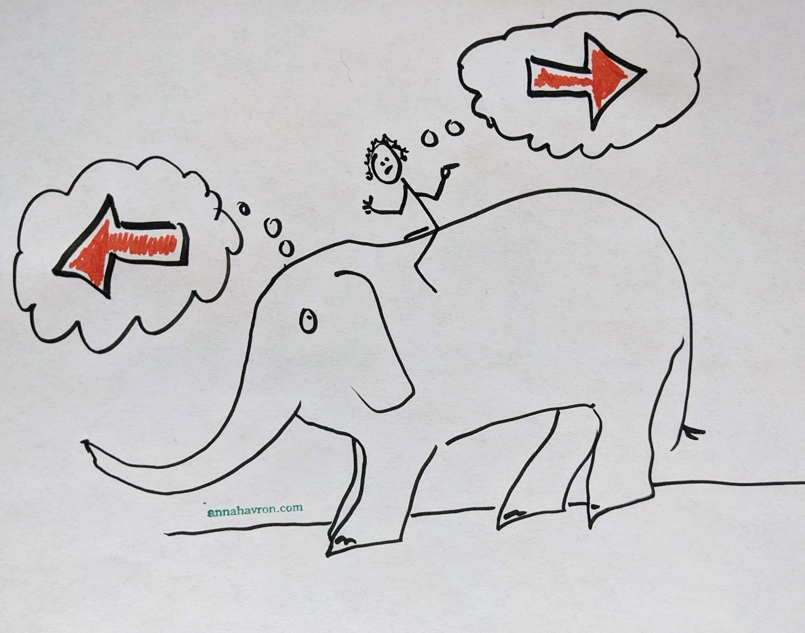
This is one of those anxiety-provoking weeks where I want to hang this sign in front of my face. Even if it’s not true.
Well, I finally got around to paying those bills I was procrastinating on; no doubt because I had some Office Cats to help me focus.
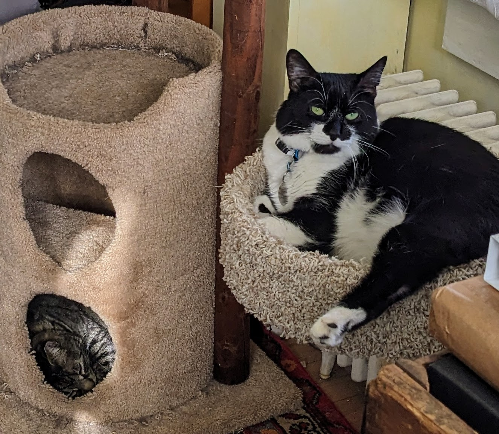
Adventures with My New Dumb Phone annahavron.com
My smart phone is now a mini-tablet.
I’ve noticed as I get older, I do more things related to safety; for example, carrying a little pocket flashlight around. Surprising how often I use it.
For some reason, during one of my busiest months of the year, I took on the commitment to post daily for Microblogvember.
With all the holiday hubbub going on, I feel proud of myself when I remember to do the things that help me retain a sense of peace.
Excited about family coming in over the next few days for Thanksgiving. Watching my phone more than usual for text updates about everyone’s various arrival times.
We Give Thanks. annahavron.com
Thanksgiving dinner is great. To graze on the leftover pie* for breakfast the next day, imho, is even better.
* Assuming there is any.

“Suppose you were an idiot, and suppose you were a member of Congress; but I repeat myself.” - Mark Twain, who was underwhelmed by its members.
Our cat Posey started joining us for morning yoga. She sprawls on the middle of my mat, and then rolls around, while meowing a LOT. It’s not very meditative with her there, nor is it easy to move around her; but I never tire of her antics.
Looking at the calendar makes me feel like I’m tumbling down Niagara Falls, as we barrel toward the holidays. Too fast!
As a political science nerd, to my mind, it’s all about the franchise.
“Aluminum” is one of my favorite words to write in cursive. Also, “onomatopoeia,” “telomere,” and “phalarope.”
When I was very young, I petted a black and white kitty with a strange stripe, and immediately learned to leave those kinds of kitties alone.
This weekend the calendar showed me that I need to adjust my expectations for how much I will actually get done, before Thanksgiving.
I had a suspicion a squirrel was getting into our bird feeder, and here is proof. Note that the squirrel is standing on a “squirrel-proof” baffle, eating out of a “squirrel-proof” feeder.

Most of its leaves are down now; but here is my neighbor’s gingko last week, on full autumn display.
Inner Trolls, and Better Angels: Being a Person, Online annahavron.com
Sometimes I wish I were as certain as a one-handed economist. But, on the other hand…
The Home Paper Shredder I’m Keeping. analogoffice.net

Struggles for full citizenship and voting access still echo from the past.
Best “I Voted” sticker I’ve ever seen.
Today at Analog Office World Headquarters, I shared my admiration for monster document shredding trucks.
In ancient times, I gave software companies my credit card number, and then they gave me a license. These days I just give them the credit card number.
Two neighbors have garden compasses, example here. With one, if you face North on the obelisk, the north is behind you. With the other, if you face North on the obelisk, the north is in front of you. I can’t figure out which way is best.
Big Adventure, Little Adventure annahavron.com
Cardboard shredder preparing to bite that corner; and box sitter, making sure it’s occupied. Teamwork! Happy Caturday 🐈
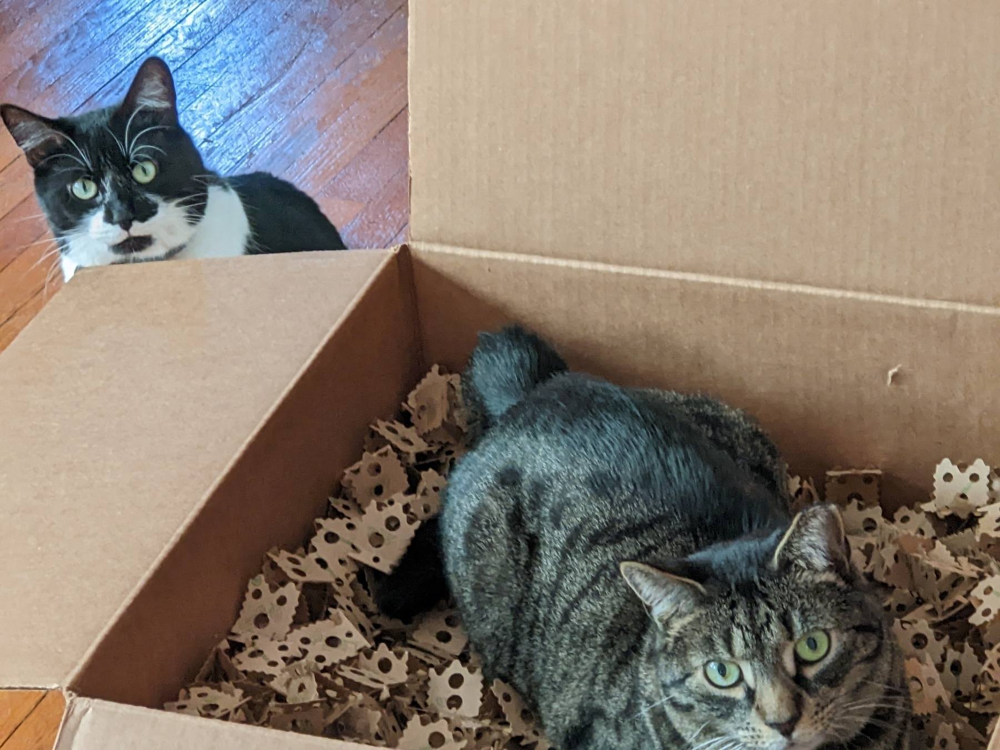
The World Stops When a Kind Person Dies. annahavron.com
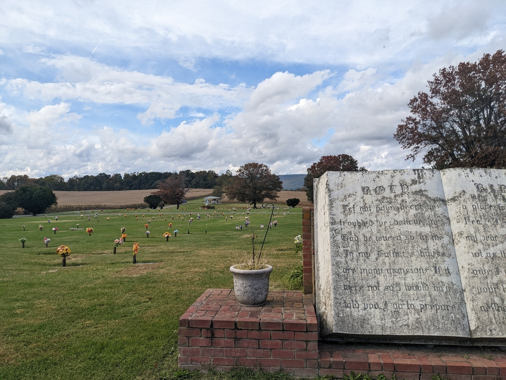
Cemetery, Shenandoah County, Virginia, USA, 2:15 p.m. Officiated at one funeral here an hour earlier. I’ll be back to do another tomorrow.
Fat Bear Week! I love this contest so much. Wilderness education + magnificent bears.
Organization Is a Spiritual Practice annahavron.com
It Takes As Long To Get Back, As It Did To Get Away annahavron.com
Keeping Up with the News, Sanely annahavron.com
Look! No one is biting anyone’s ears. No one is swatting anyone’s face. No one is hissing or using bad language. We are being VERY GOOD sitting nicely together. It only took two years. 🐈
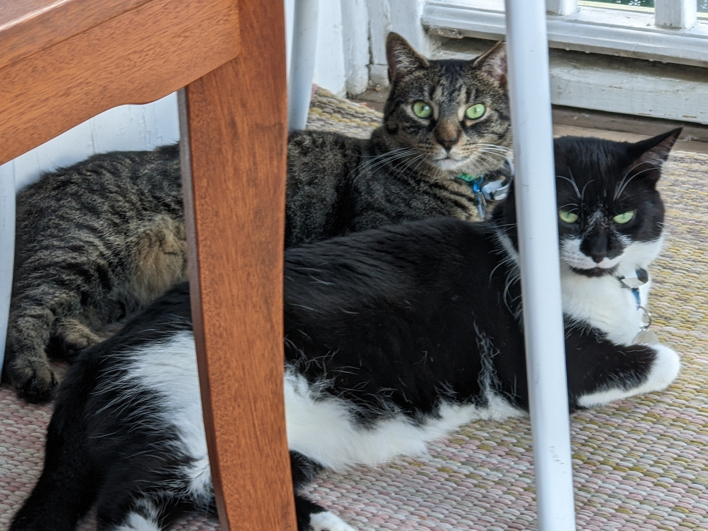
Another lovely morning walk, and the green heron was here today, too. I think it’s a juvenile – lots of brown stripes and streaks. When I saw it hunting last week alongside the bank, its patterns made it nearly invisible as it stalked along the grasses. Also, enjoy some wildflowers.
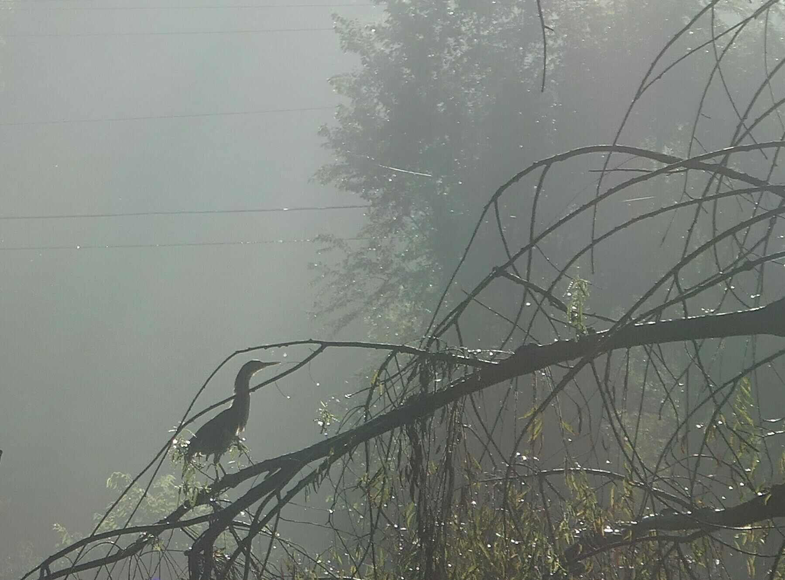
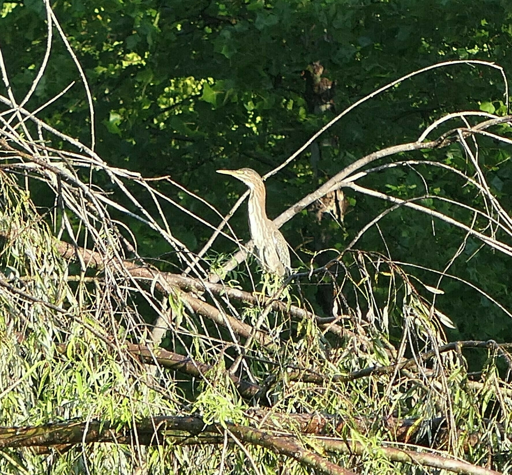
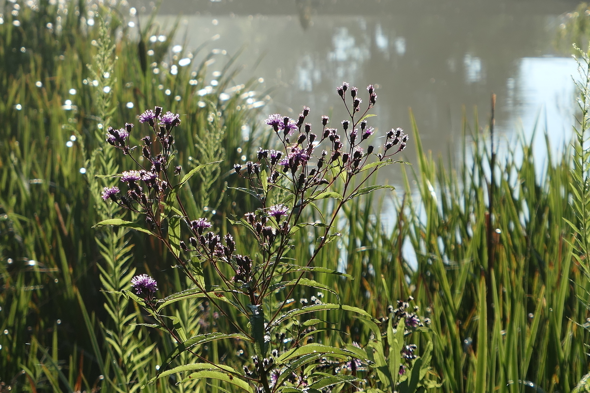
Landing Lights: Making Decisions in Times of Transition annahavron.com
Some house sparrows built a nest behind this gutter. They planted their own rooftop garden with the seeds they carried in for the young.
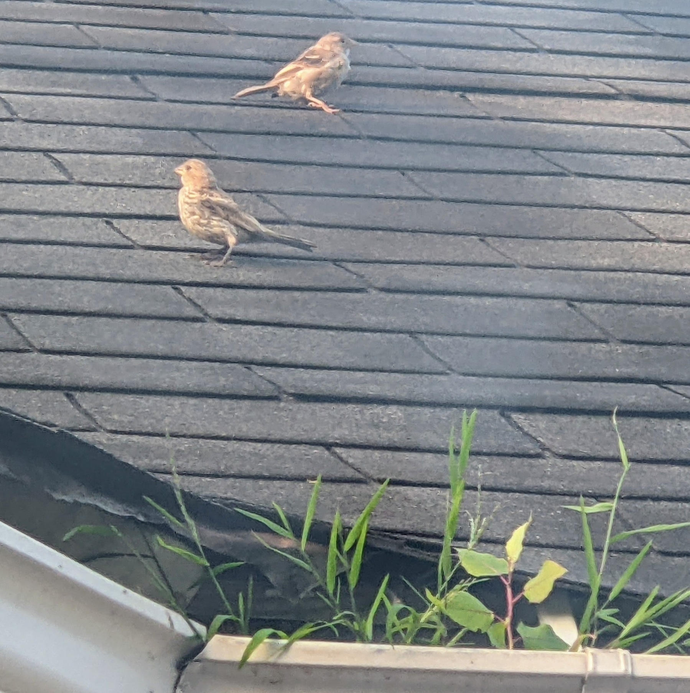
Thanks to @aa for this wonderful key wrist strap! The leather lining on the inside means it’s way more durable than my old one. A Buy it For Life item, for sure.
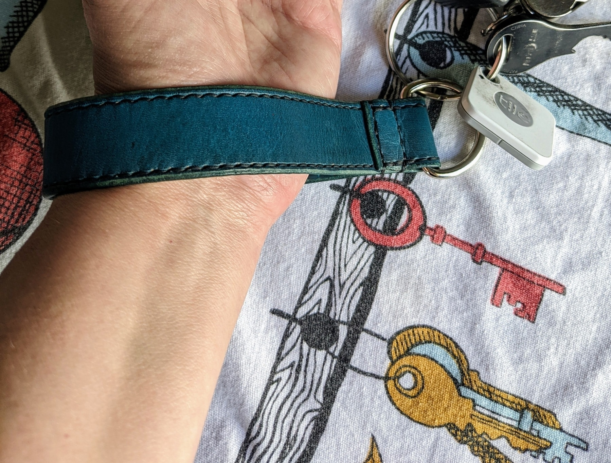
Don’t Hold a Job, Hold an Office Instead annahavron.com
You are Here, and Here, and Here: Organization as Mental Extension annahavron.com
Roles from the Outside, Roles from the Inside annahavron.com
We have three species of fireflies in our yard: Flares, Lawn Blinkies, and Tree Blinkies. I love fireflies. Perhaps I should learn their real names, though.
Getting Organized Means You Separate Deciding from Doing annahavron.com
When Work is Love Made Visible annahavron.com
We don’t have an aquarium; just a school of catnip fish - microblog photo challenge, May 30
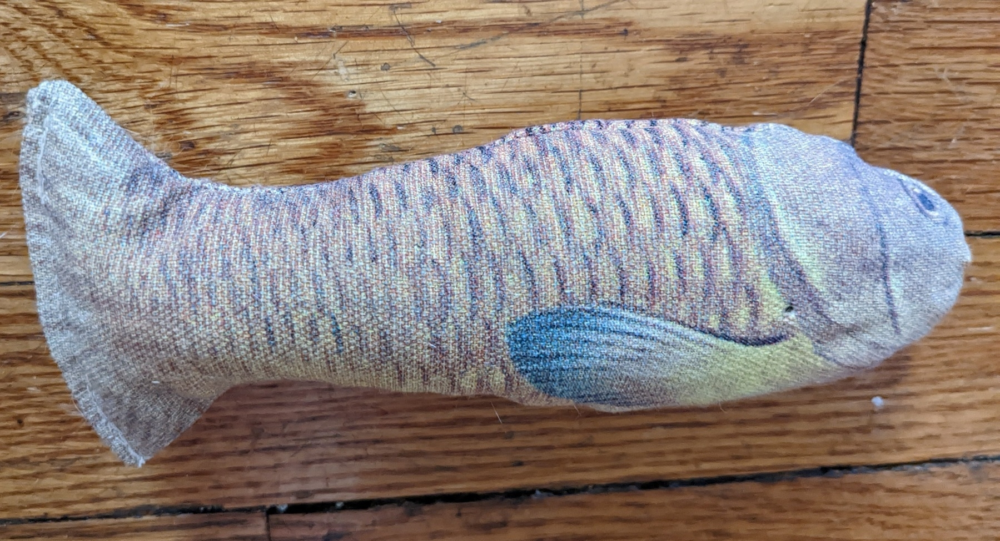
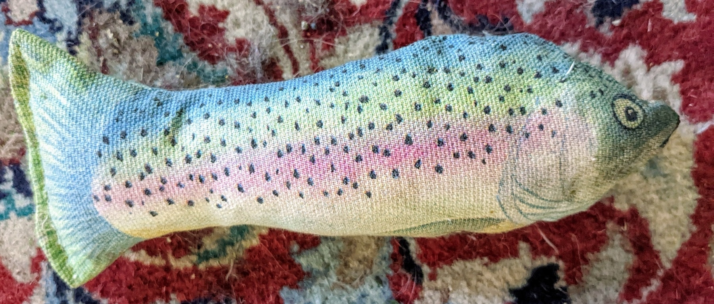
After a hard week, it’s great to hang out with my favorite stripes - microblog photo challenge, May 29
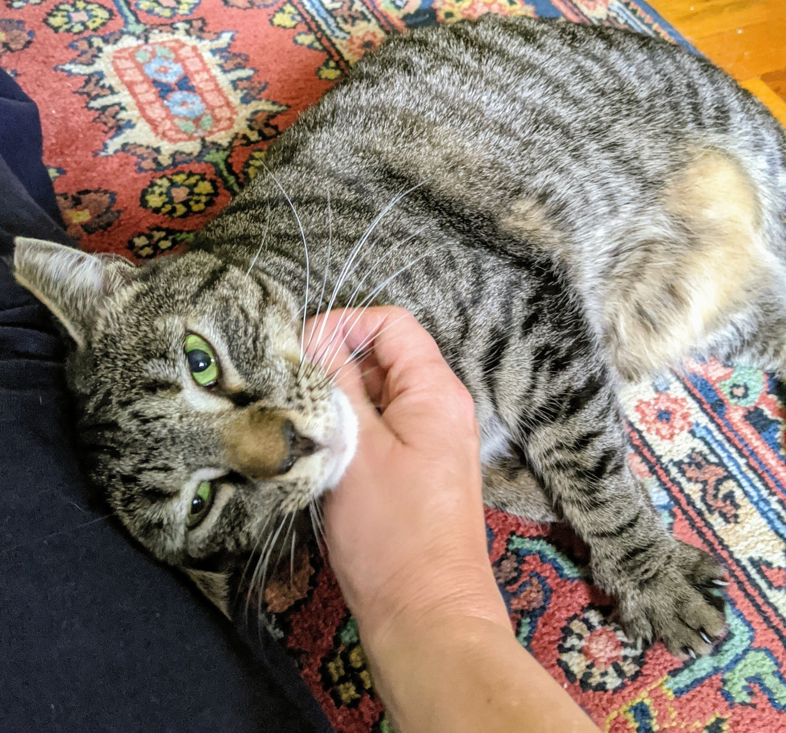
Perfection versus Potential: Be a Tree annahavron.com
Make Your Home a Sanctuary with the Four S’s annahavron.com
How to Find Out What Actually Makes Your Life Better annahavron.com

Just got back from a fantastic visit to Portland, Oregon. Here are some pics, from most to least manicured mossiness. But everything is mossy… including some people’s cars.
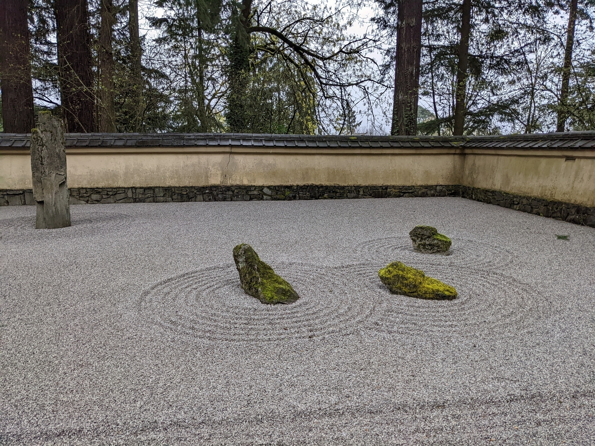
Make a “Yes and No” List annahavron.com h/t @uncertainquark

It’s Crunch Time annahavron.com
Hey, Let’s Talk About Death annahavron.com
So someone in my family needs a medical screening test. I asked the medical expert I live with, what the difference was between a CAT scan, a mammogram, an MRI, and a PET scan. He said, “Well, with a PET scan, you can use either a cat or a dog…”
We find what we are looking for:
“There aren’t very many toys in the prehistoric archaelogical record. For a long time, archaelogists thought that was because prehistoric kids were somehow fundamentally different from modern kids. But now some scholars think that the toys are missing from the record simply because early archaeologists didn’t recognize them. Whenever they saw objects that could easily be used for children’s play, they categorized them as items used for ritual instead.”
Manage Your Personal Information: Paper, Digital, or Both? annahavron.com
The Souls of Things: Decluttering and Disposal as Sacred Acts annahavron.com
Decide once. Write it down. Free your mind for better things. annahavron.com
Coach yourself to live out your values. annahavron.com
Hey, micro.bloggers who use TextExpander, I’m starting a trial of this service.
What is one thing you use it for, that makes you feel like a subscription is worth it?
”…and in western East Virginia today, a shocking take-down of Santa Claus. A feline washing her face near the scene darted under the coffee table when approached.”
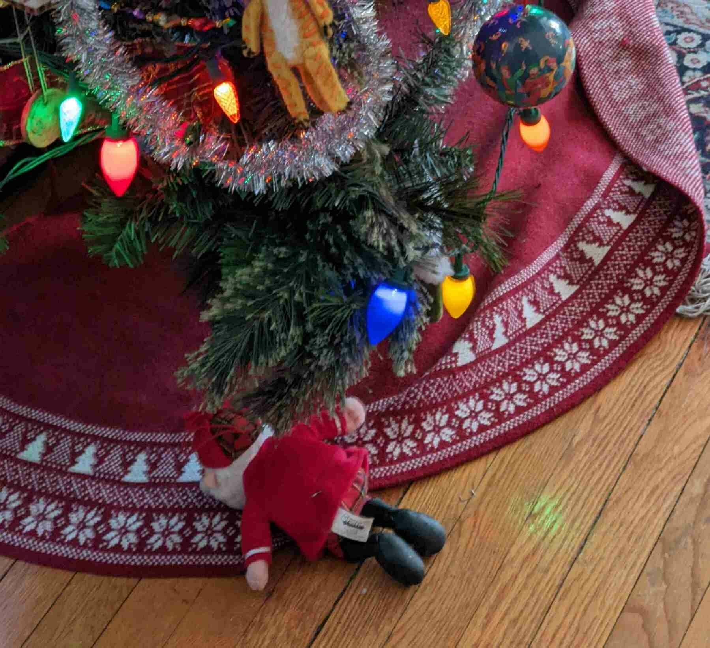
A simple pot of beans. annahavron.com
Waiting for files to upload… waiting for files to upload…. I wonder what would be a good song to sing, while I wait for these files to uplooooaaad?…… Sigh.
Press “pause.” Even in December. Even when you have kids. annahavron.com
On welcoming guests, and getting things done, and welcoming them anyway even if you didn’t. annahavron.com
The Great Thanksgiving Pie Debate: my family is from New England, his is from Tennessee. I know that the proper accompaniment to a slice of apple pie is sharp Vermont cheddar cheese. He thinks it should be a scoop of vanilla ice cream. Thoughts?
Just discovered this site. No piece of string is safe from me now. Animated Knots
On cold, rainy days, they cycle back and forth between radiators. Microblog October 29 photo challenge, “cycle”
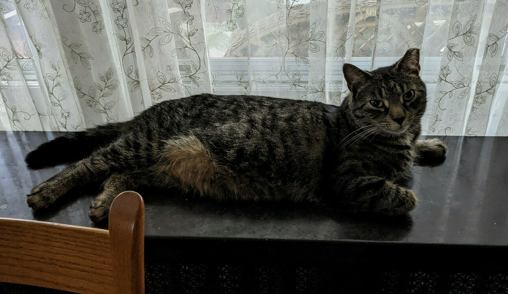
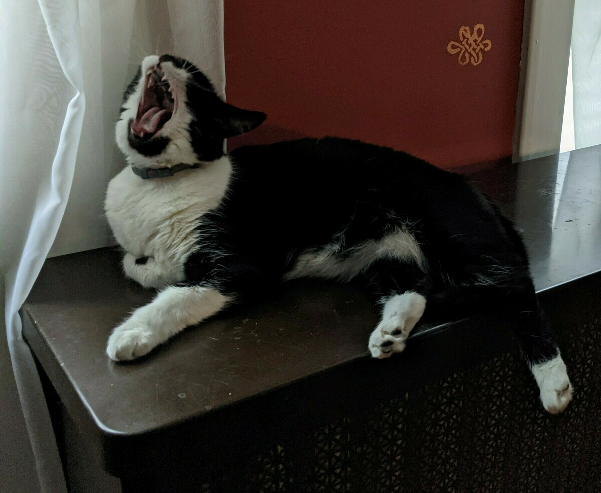
Oliver Burkeman’s cosmic insignificance therapy, and what I learned about significance from officiating at funerals. Oliver Burkeman’s cosmic insignificance therapy
There is a brick road underneath the asphalt. Micro.blog October photo challenge Day 28: underneath
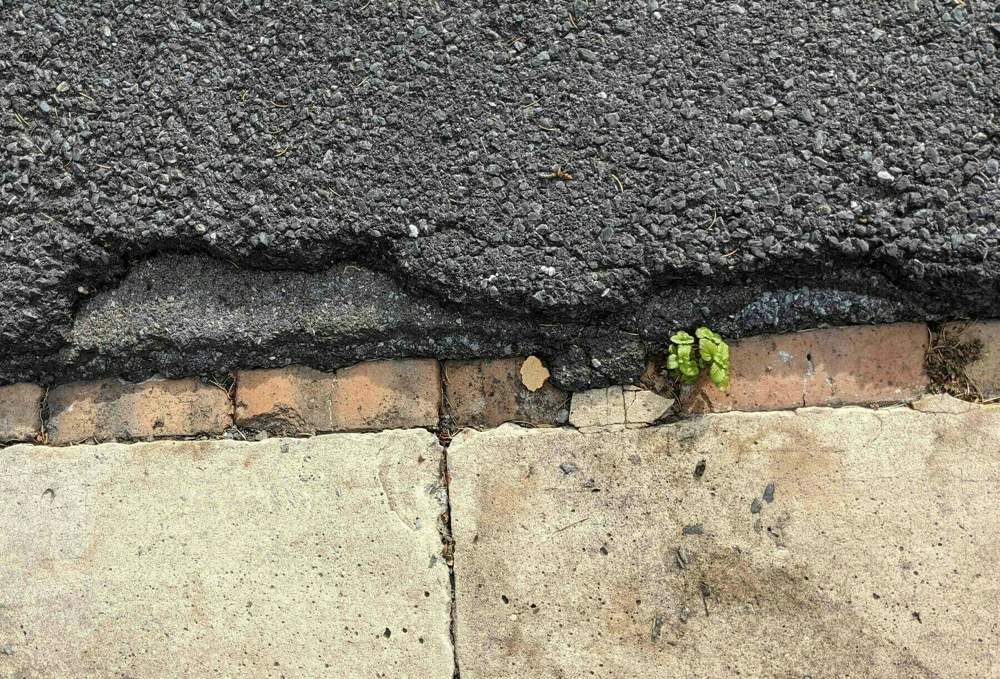
Our little princess is always dreaming of chaos. October photoblogging challenge
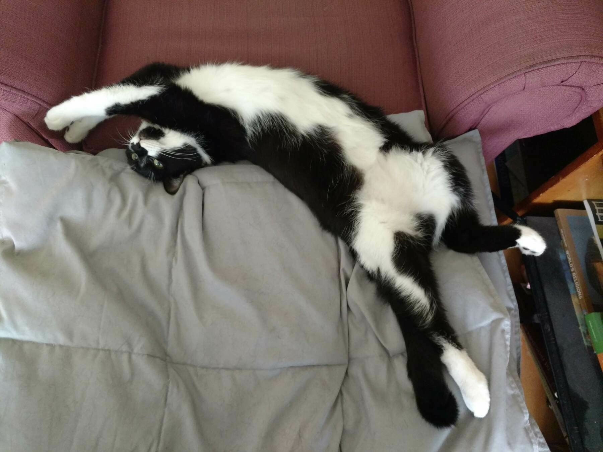
My husband’s response to a broken china cup: “We already have a compost heap. Why don’t we start a midden pile?”
Rural vs Suburban: Number of Vehicles is Analogous to Number of Cats
My husband grew up in suburbia. I grew up in the country. As we were driving through rural Virginia, I explained to him that trucks and cars per household in the country, are like cats per household in suburbia. If you have one, that’s not enough - you can’t just have one. Two or three, that’s unremarkable. Four – eh – that can go either way. But once you have five or more vehicles in your driveway in the country and/or five or more cats at your suburban home, then people start to notice.
A house finch decided to make her nest on the wreath on our front door. I get scolded whenever I get the mail.
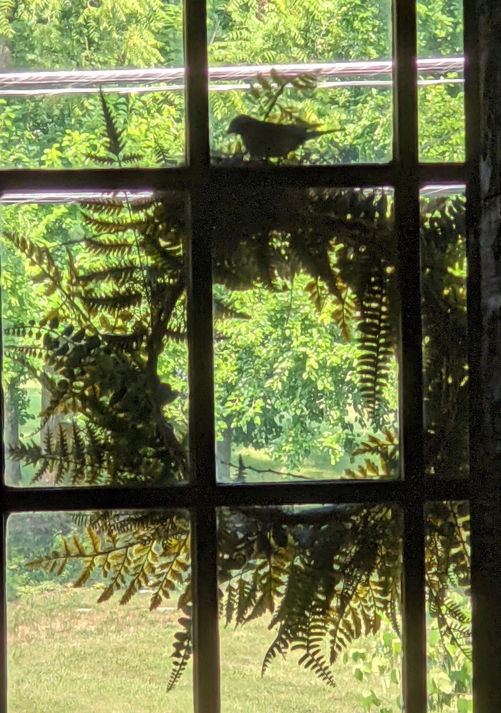
My brain keeps thinking it’s better than my checklists, but no.
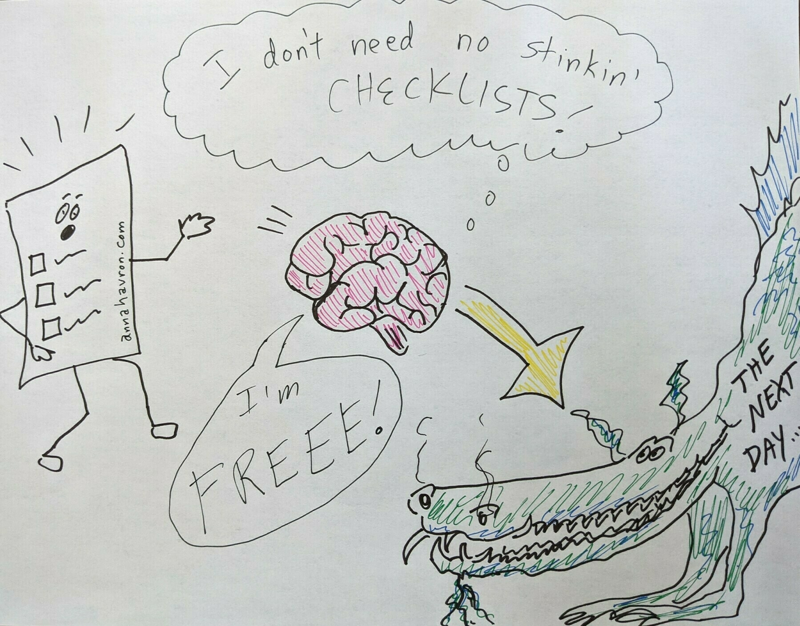

My rural commute today was enlivened by a man in overalls standing in the middle of the road. He put up his hand, and I pulled to a stop. He said, “Go ahead, but drive slow. Some of our cows got loose.”
I got annoyed because a butterfly was messing with my schedule. https://www.annahavron.com/blog/living-at-a-savoring-pace
Okay, Brood X cicadas… That’s my garlic you’re resting on! The sheer numbers get biblical, but these young adults won’t actually eat our plants.
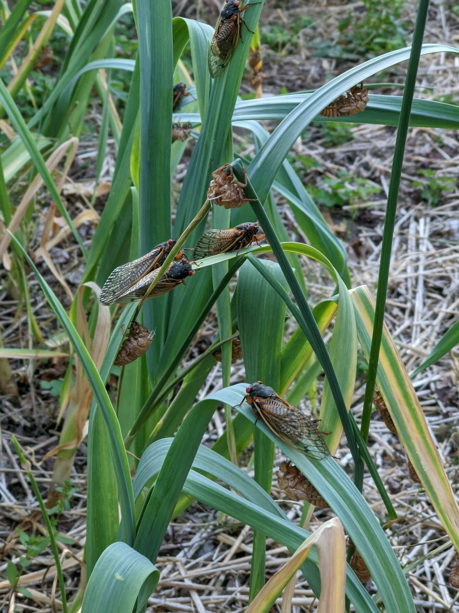
Brood X periodic cicada hanging out on my back patio after 17 years underground. I think they are both cool, and creepy. And they fly quite slowly: no wonder the birds love them!
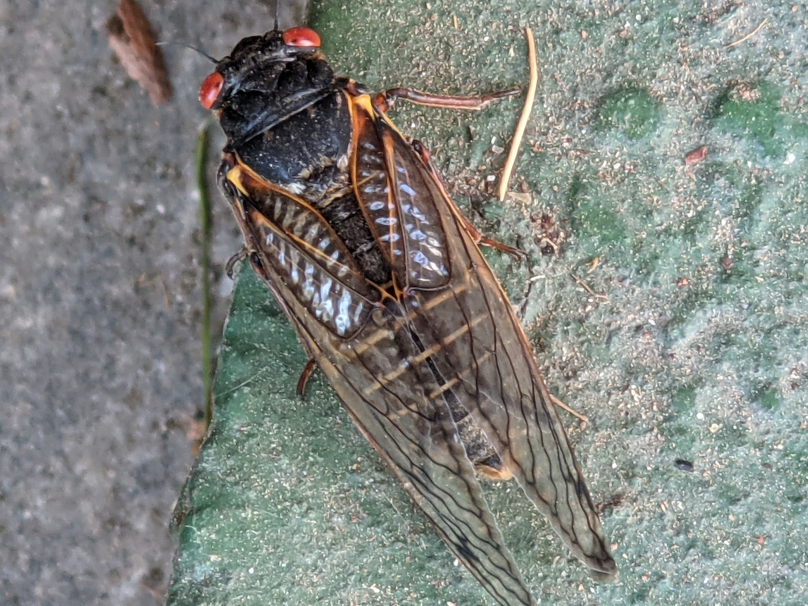
Routine daily chore, for about a month every seventeen years: sweep up the spent Brood X cicadas that perished on my back patio. And front steps. And porch. And walkways. Etc.

Brood X cicada burrows - the red ant in the upper left is on the edge of one, and there is another burrow in the lower right of the photo. Any day now!


The world’s worst mockingbird has moved into our yard. Chases off all the smaller songbirds; doesn’t sing, himself.
Today at Zoom coffee hour, we evaluated the merits of dandelion wine, persimmon wine, and blackberry wine. Group consensus: blackberry wine is the winner by far.

Recent dinner conversation: the cook said, “I put a surprise ingredient in this!” One of the eaters said, “It’s raisins. The surprise is always raisins.” It was raisins.
"Awareness, Acceptance, Exploration..." in a cell phone picture
Just took a marvelous online workshop from Goodhart Photography called ‘Photography for Wellbeing.” I learned a mindfulness practice for taking photos.
This is a home-made wind bell we got at a farmstand near our favorite beach. It shattered in a windstorm years ago, but I couldn’t bear to get rid of it. (And yes, it still rings nicely.)
I feel like it just said “thanks.”

Hey you, I mean, y'all, I mean yinz, youse guys
Today at Zoom Coffee Hour, we mulled over the variety of terms for the second person plural pronoun. One person, from Pennsylvania, grew up saying “yinz.” Most people around here say “y’all.” In one place I lived, it was “you guys.” My high school French teacher in Texas used to yell, “People! ‘Vous’ is ‘y’all!‘”
"You like cats," she said.
A statement, not a question: we were both wearing face masks with cat pictures, in the check-out line. I nodded.
“I got eleven of them, twelve if you count the one buried in the yard.” Seeing my interest, she added, “And I got two possums, three raccoons, and a couple of rats.”
She told me that one of the raccoons comes up to the sliding door because she feeds it hot dogs.
I said, “If I were a raccoon, I would show up for hot dogs.”
We nodded together about hot dogs. And then I had to pay, and go.
That's a good question...
KELLY: Which - I suppose, as a non-scientist, I have to ask, why? What would be the great loss to humanity if the pupfish of Devils Hole were no more?
KOLBERT: Well, I quote a biologist named Phil Pister, who was instrumental in saving the Devils Hole pupfish and other very, very endangered fish. And people would always ask him, you know, when he was devoting his life to this task, “What good are pupfish?” And his response, which I think bears repeating, was always, “What good are you?”

energy February photoblogging
The Tablecloth Monster returns. And yes: she pulls it all down. Oh, yes.

The Office Cats are in. They love these cat ball beds. Especially because I put them next to the radiator.


Lately, my cats have been adding drama to their routines. When one leaves the litter box, the other waits in ambush.
Morning Beverage February Photoblogging
Coffee + journaling, first thing every morning. …Okay, after I feed the cats.


One of our children is now paying his own cell phone bill. Maybe we’ll buy a beach house with the savings 🤣
Yay! Getting up to pet the cats or make some tea counts as exercise.
Today at Zoom coffee hour, a lively discussion over whether planting seeds – or fence posts – based on the moon’s astrological signs, as listed in the Old Farmer’s Almanac, actually works.
“I arise in the morning torn between a desire to improve (or save) the world and a desire to enjoy (or savor) the world. This makes it hard to plan the day.”
― E. B. White
Great start to inauguration day here in the U.S.: watching some picturesque snow flurries while holding a purring cat.
My mental DJ this morning has been playing “What Shall We Do with a Drunken Sailor,” which is a song my grandmother taught me. Only now has it occurred to me that this is a weird song to teach little children to sing…
The apple processing plant in town is making apple butter today – the air outside smells like cinnamon.
Wanted to cook something with fennel bulb, but the supermarket was out… which is unusual. A friend who stocks produce said that’s because it is early January: fresh veggies will be flying off the shelves for the next few weeks, as people resolve to eat healthier.
Today at Zoom coffee hour, a local historian mentioned that people often hid things in grandfather clocks and mantel clocks. One time, she found a bone fragment: a souvenir from someone’s leg surgery.
New Year’s Day began with a moment of peace, before the black and white one realized she was being snuggled, and left in a huff.


Started fiddling with interstitial journaling a few weeks ago. It’s surprisingly helpful. It’s like a combination emotion/distraction management tool, and a “now, where was I?” log. I’m using the Amplenote Daily Jots feature for mine. Ness Labs open-access description with Roam tips here, or scale the Wall of Medium to see Tony Stubblebine’s original article here.
This is the week to clean out the old year’s files and spreadsheets, and set up the new ones. I’m excited by the idea of organizing. I’m excited by my plans for organizing. I love thinking and planning. Actually digging into the files, however, seems suspiciously like work.
Our common image of experience is about as accurate as a still photograph of a man riding a bicycle. Project this image back into reality, and the man will fall off his bicycle. – Robert Grudin
Year in Review, March 2020: the Catio
For the first time, I’m doing a yearly review using this template from Ness Labs. However, I’d like to do a photographic year in review, right here. Let’s start with Posey, who is on our screened-in porch, now known as the “catio.” This is early spring, 2020, ten days before our state issued a stay-at-home order for the pandemic.

Year in Review, April 2020: We Succeed in Doubling Household Cat Census, but Fail Miserably at Sourdough
One month later, we adopted Beans, the nervous fellow in the box below. And yes, besides adopting a pet, I tried another pandemic cliche: baking sourdough. (My dough did not rise. It sank. I learned to make sauerkraut and pickles instead.) Beans hid under a bed for two weeks.

Year in Review, April 2020: Birds and Bluebells
Our daughter moved back home with us to attend grad school. On this day we walked at a retreat center on the Shenandoah River. Virginia bluebells in the foreground; in the background, I like to think those waterbirds with the brown heads are canvasback ducks, since it was migration season. Love this bird ID app.


Year in Review, May 2020: Had to Cancel Spring Vacation, Garden Tries to Compensate
The hydrangeas decided to be all the colors this year.

Year in Review, June 2020: Mass Mantis Transportation
So when we screened in the catio last summer, we neglected to notice the praying mantis egg case inside the porch. Luckily, our daughter used to work at an entomology lab. Here is my heroic family moving 300 or so mantids to the garden. We kept finding mantises for the rest of the summer; and they too got ferried to the yard.


Year in Review, August 2020: At the Beach, Even the Clouds Made Waves
Vacation in late August, to a quiet beach cottage. This was one of the strangest cloud formations I’ve ever seen. Maybe it was this phenomenon.


{kind=link}
Year in Review, November 2020: Beans Tries All the Beds
Beans eventually came out from under the humans’ bed and tried to share a cat bed with Posey. She kicked him out, and he had to go to his own.


Year in Review, December 2020: Dear Family, Please Don't Blame the Post Office...
…when you open your Christmas boxes. In the red tote, we have Posey hunkering down to thoroughly crush the ribbons and bows. In the foreground, we have Beans activating claw mode to slice some paper. This is why we (still) can’t have nice things.